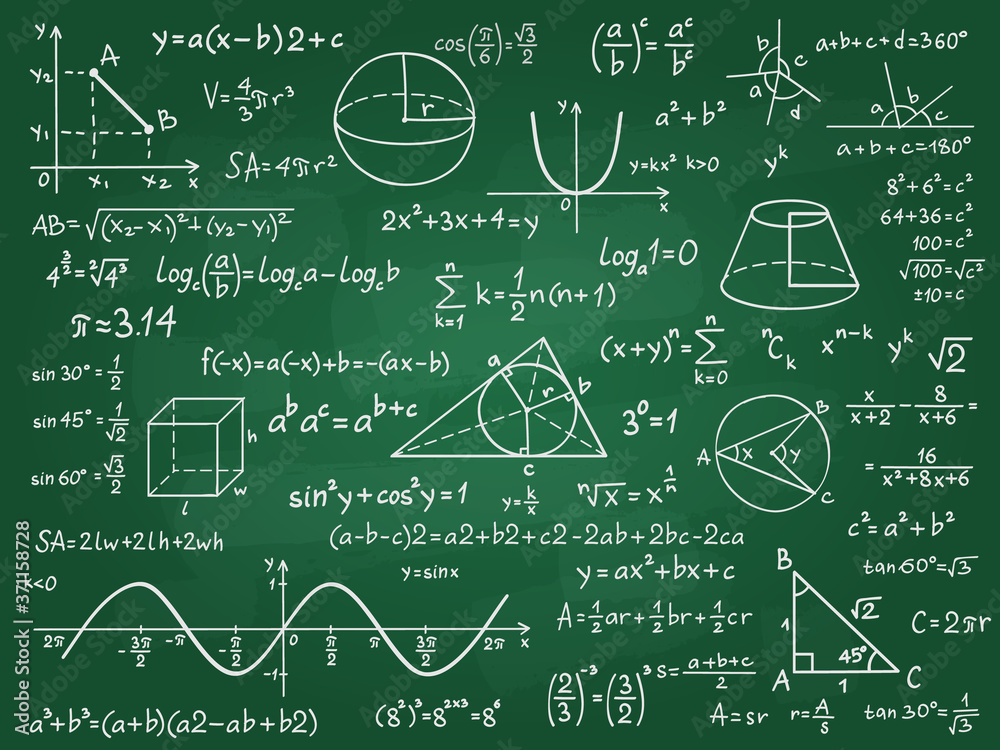
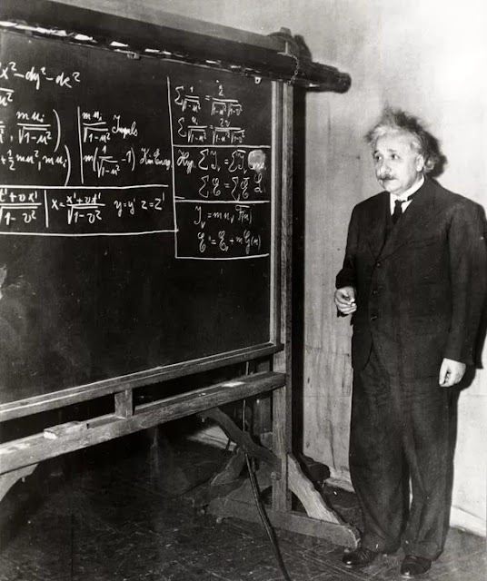
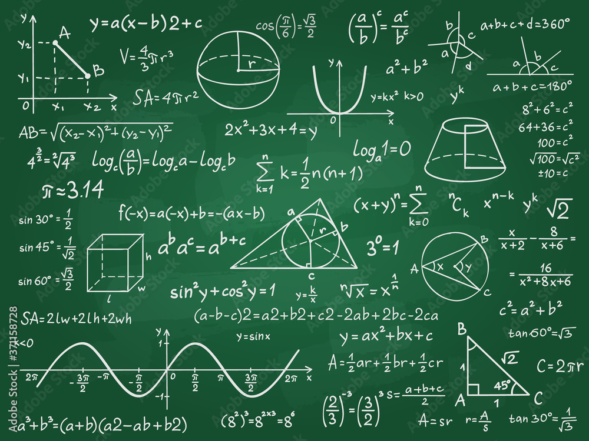
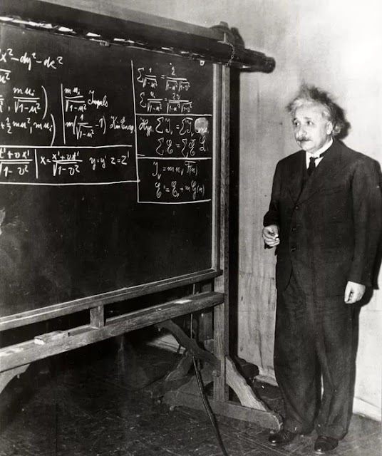

From Counting to Calculus
Why Mathematics Matters
Mathematics is more than just numbers and equations - it's a story of human ingenuity and persistence. From the ancient civilizations counting on their fingers to the complex algorithms powering our modern world, mathematics has shaped every aspect of human progress. Our website brings these stories to life, showing how each mathematical discovery has built upon previous knowledge to create the foundation of modern science and technology.
The Human Side of Mathematics
Behind every formula and theorem stands a person who dared to think differently. These mathematicians faced challenges, experienced moments of brilliant insight, and sometimes spent years pursuing solutions to problems that others thought impossible. Their stories remind us that mathematics is a deeply human endeavor, filled with creativity, persistence, and occasional moments of serendipity.
Learning Through Stories
Understanding the context and history behind mathematical concepts can make them more accessible and engaging. When students learn that negative numbers were once considered absurd, or that zero was a revolutionary concept, it helps them relate to their own struggles with new mathematical ideas. Our website bridges the gap between abstract concepts and real-world understanding through compelling narratives.
Alan Turing was a British mathematician and cryptanalyst who laid the foundation of modern computing.
Carl Friedrich Gauss was a German mathematician who made groundbreaking contributions to number theory, algebra, and astronomy.

 


